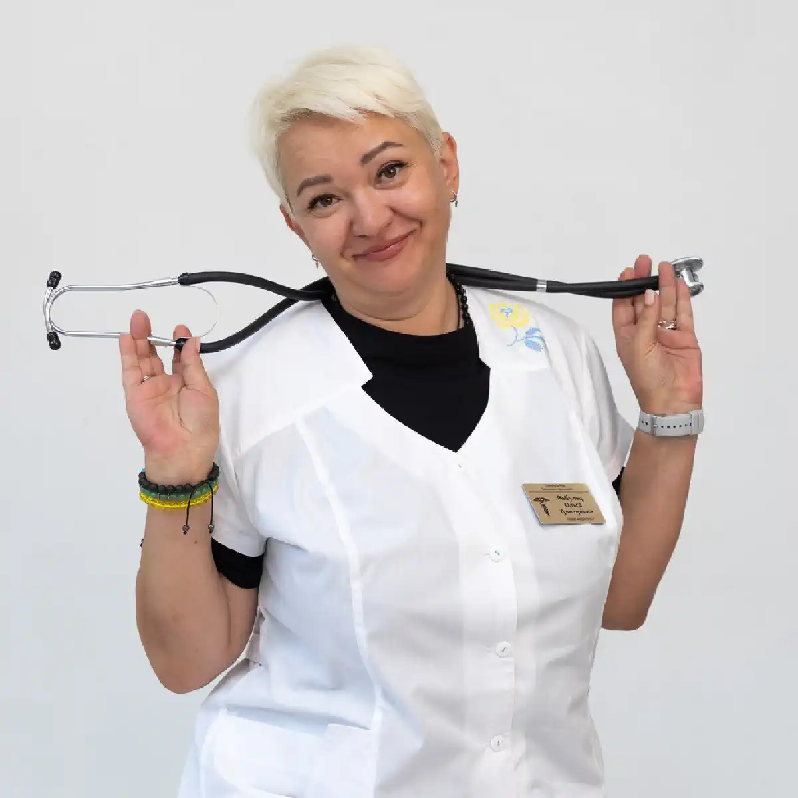

+38(068) 79 72 782
+38(068) 79 72 782Лікування наркоманії у Запоріжжі
Перший крок у тверезість


Безкоштовна консультація, працюємо цілодобово 24/7
Перший крок у тверезість

Лікування наркоманії — це складний і багатоетапний процес, що потребує професійного підходу, медичного контролю та комплексної терапії. У Запоріжжі сучасні наркологічні центри пропонують ефективні програми лікування, які спрямовані не лише на усунення фізичної залежності, а й на глибоке відновлення психоемоційного стану пацієнта. Такий підхід дозволяє впливати на всі аспекти захворювання, а не лише на його зовнішні прояви.
Наркотична залежність — це хронічне захворювання, яке поступово руйнує організм і особистість людини. Вона негативно впливає на роботу внутрішніх органів, особливо нервової системи, серця і печінки, викликає серйозні психічні порушення, знижує когнітивні функції та погіршує якість життя. Крім того, залежність руйнує соціальні зв’язки: виникають проблеми в сім’ї, на роботі, втрачається довіра близьких, погіршується фінансове становище.
З часом людина втрачає контроль над уживанням, а спроби самостійно відмовитися від наркотиків, як правило, виявляються неефективними. Це пов’язано з тим, що залежність формується як на фізичному, так і на психологічному рівні. Без професійної допомоги нарколога впоратися з цим станом вкрай складно і небезпечно. Саме тому важливо якомога раніше звернутися за медичною допомогою. Ранній початок лікування значно підвищує шанси на повне відновлення і знижує ризик розвитку ускладнень. Під контролем нарколога проводиться діагностика, підбирається індивідуальна програма терапії та забезпечується безпечне проходження всіх етапів лікування.
Комплексний підхід включає детоксикацію, медикаментозну підтримку, психотерапію та реабілітацію. Такий формат лікування дозволяє не лише усунути фізичну залежність, а й опрацювати причини вживання, змінити поведінку та сформувати стійку мотивацію до тверезого життя. У результаті пацієнт отримує можливість не просто відмовитися від наркотиків, а повністю змінити своє життя, відновити здоров’я, повернути соціальну активність і налагодити стосунки з близькими. Комплексне лікування дозволяє досягти стійкої ремісії та створити міцну основу для довгострокового відновлення без залежності.
Розпізнати наркотичну залежність можна за низкою характерних симптомів, які поступово посилюються в міру розвитку захворювання. На ранніх етапах зміни можуть бути малопомітними, однак з часом вони стають більш вираженими і починають суттєво впливати на повсякденне життя людини. Серед основних ознак — зміна поведінки, різкі перепади настрою, підвищена дратівливість або, навпаки, апатія, втрата інтересу до звичної діяльності та хобі. Також часто спостерігається погіршення зовнішнього вигляду: людина перестає стежити за собою, може виглядати втомленою, виснаженою, з ознаками недосипання. Порушення сну та апетиту стають регулярними — можлива як безсоння, так і надмірна сонливість, різке зниження або збільшення маси тіла.
З часом приєднуються когнітивні порушення: погіршується пам’ять, знижується концентрація уваги, виникають труднощі з прийняттям рішень і виконанням звичних завдань. Це відображається на роботі або навчанні, призводить до зниження продуктивності та помилок. Нерідко виникають фінансові труднощі, пов’язані з постійною потребою в придбанні наркотиків. Людина може позичати гроші, продавати особисті речі, приховувати свої витрати. Паралельно розвивається соціальна ізоляція — зменшується коло спілкування, втрачаються контакти з близькими, з’являються конфлікти в сім’ї та на роботі. Важливо не ігнорувати ці ознаки, навіть якщо вони проявляються поступово. Чим раніше буде виявлена проблема і розпочато лікування під контролем нарколога, тим вища ймовірність успішного відновлення і повернення до повноцінного життя без залежності.
Лікування наркоманії включає кілька послідовних етапів, кожен з яких відіграє важливу роль у досягненні стійкого результату. Терапія завжди починається з комплексної діагностики стану пацієнта. На цьому етапі нарколог оцінює ступінь залежності, загальний стан здоров’я, наявність супутніх захворювань, а також психологічні особливості людини. Це дозволяє розробити індивідуальну програму лікування, максимально адаптовану під конкретного пацієнта.
Наступним етапом є детоксикація організму, спрямована на виведення наркотичних речовин і продуктів їх розпаду. Детокс проводиться під медичним контролем і допомагає безпечно зняти симптоми абстиненції, стабілізувати стан пацієнта та підготувати його до подальшого лікування. У цей період особливо важливе спостереження лікаря, оскільки можливі ускладнення, що потребують своєчасної корекції.
Після стабілізації стану призначається медикаментозна терапія. Вона спрямована на відновлення роботи внутрішніх органів, нормалізацію нервової системи, зниження тяги до наркотиків і поліпшення загального самопочуття. Паралельно починається робота з психологом, оскільки саме психологічна залежність є однією з основних причин рецидивів. У процесі терапії пацієнт вчиться справлятися зі стресом, контролювати свої емоції та формувати нові моделі поведінки.
Завершальним і одним із найважливіших етапів є реабілітація та соціальна адаптація. У цей період закріплюються результати лікування, формуються стійкі звички тверезого життя і відновлюються соціальні зв’язки. Пацієнт отримує підтримку фахівців, вчиться вибудовувати стосунки з оточенням і повертається до повноцінного життя без наркотиків. Комплексне проходження всіх етапів лікування значно знижує ризик зриву і дозволяє досягти тривалої ремісії, забезпечуючи не лише відмову від наркотиків, а й повне відновлення особистості.
Вартість лікування наркоманії в Запоріжжі починається від 2499 грн.
Детоксикація є першим і обов’язковим етапом лікування наркоманії. Вона спрямована на очищення організму від наркотичних речовин і продуктів їх розпаду, які накопичуються в тканинах і чинять виражений токсичний вплив на внутрішні органи. У період активного вживання страждають печінка, серцево-судинна система, головний мозок і обмінні процеси, тому своєчасне проведення детоксикації відіграє ключову роль у відновленні організму.
Процедура проводиться під контролем нарколога і дозволяє безпечно зняти симптоми абстиненції, стабілізувати стан пацієнта та підготувати його до подальшого лікування. У цей період використовуються інфузійні розчини, вітаміни, препарати для підтримки нервової системи, серця і печінки. Медикаментозна терапія підбирається індивідуально з урахуванням стану пацієнта, виду вживаних речовин і тривалості залежності.
Особлива увага приділяється полегшенню симптомів «ломки», які можуть включати виражену слабкість, болі в тілі, тривожність, безсоння, перепади тиску та інші тяжкі прояви. Під медичним наглядом вдається значно знизити інтенсивність цих симптомів і зробити процес відмови від наркотиків максимально безпечним. Детоксикація — це лише початковий етап лікування. Вона усуває фізичну залежність і виводить токсини, але не вирішує психологічні причини вживання. Проте саме з неї починається шлях до одужання, оскільки стабілізація стану пацієнта створює основу для подальшої медикаментозної терапії, психотерапії та реабілітації. Правильно проведена детоксикація дозволяє знизити ризик ускладнень, поліпшити загальне самопочуття і значно підвищити ефективність подальшого лікування, допомагаючи пацієнту зробити перший і найважливіший крок до життя без наркотичної залежності.
Психологічна підтримка відіграє ключову роль у лікуванні залежності і є основою для досягнення стійкого результату. Навіть після усунення фізичної залежності у пацієнта зберігається психологічна тяга до наркотиків, пов’язана зі звичками, емоційними реакціями та внутрішніми установками. Саме тому важливо не лише припинити вживання, а й глибоко опрацювати причини, які до нього призвели.
Психотерапія допомагає виявити фактори, що сприяють розвитку залежності: хронічний стрес, тривожність, депресивні стани, внутрішні конфлікти, проблеми в сім’ї або соціальному середовищі. У процесі роботи пацієнт починає краще розуміти свої емоції, реакції та поведінку, що дозволяє поступово змінювати ставлення до наркотиків і формувати усвідомлену мотивацію до тверезого життя.
Робота з психологом дозволяє знизити тягу до наркотиків, навчитися справлятися зі стресом без уживання психоактивних речовин і виробити ефективні стратегії поведінки у складних життєвих ситуаціях. Пацієнт опановує навички самоконтролю, управління емоціями та запобігання імпульсивним рішенням. Особлива увага приділяється профілактиці рецидиву. Психолог допомагає визначити індивідуальні тригери — ситуації, емоції або оточення, які можуть спровокувати зрив. На основі цього формуються чіткі алгоритми дій, що дозволяють уникнути повернення до вживання.
Додатково можуть використовуватися різні формати терапії: індивідуальні консультації, групові заняття, сімейна терапія. Робота з близькими також має велике значення, оскільки підтримка оточення значно підвищує ефективність лікування. Психологічна допомога не лише знижує ризик рецидиву, а й допомагає пацієнту повністю змінити спосіб життя, відновити особистість і сформувати стійку основу для довгострокового одужання.
Реабілітація спрямована на відновлення особистості пацієнта і закріплення відмови від наркотиків. Цей етап є одним із найважливіших, оскільки саме тут формується стійкий результат лікування і закладається основа для життя без залежності. У процесі реабілітації людина вчиться заново вибудовувати своє життя, формувати нові звички, цілі та цінності, які не пов’язані з уживанням психоактивних речовин.
У цей період особлива увага приділяється зміні мислення і поведінки. Пацієнт поступово усвідомлює причини своєї залежності, вчиться брати відповідальність за своє життя і виробляти здорові способи реагування на стрес, труднощі та емоційні переживання. Формуються навички самоконтролю, стійкості до зовнішніх провокацій і здатність приймати виважені рішення.
Програма реабілітації включає індивідуальні та групові заняття, підтримку фахівців і поступове повернення до нормального життя. У межах терапії проводяться психологічні тренінги, спрямовані на розвиток комунікативних навичок, підвищення самооцінки і відновлення соціальних зв’язків. Групова робота допомагає пацієнту відчути підтримку, зрозуміти, що він не один у своїй проблемі, і обмінюватися досвідом з іншими учасниками.
Також важливою частиною реабілітації є відновлення стосунків з близькими і формування підтримувального середовища. За необхідності проводяться сімейні консультації, які допомагають налагодити комунікацію і створити сприятливі умови для подальшого відновлення. Поступово пацієнт повертається до соціальної активності — роботи, навчання, повсякденних обов’язків. Це дозволяє закріпити нові моделі поведінки в реальному житті і знизити ризик зриву. Реабілітація допомагає не лише відмовитися від наркотиків, а й повністю змінити спосіб життя, відновити особистість і сформувати стійку основу для довгострокової тверезості.
Після завершення лікування важливо допомогти пацієнту повернутися в суспільство і адаптуватися до життя без наркотиків. Цей етап потребує не меншої уваги, ніж сама терапія, оскільки саме в реальному житті людина стикається зі звичними тригерами, стресами і ситуаціями, які раніше могли провокувати вживання. Соціальна адаптація допомагає закріпити результат лікування і сформувати стійку тверезість.
Вона включає відновлення стосунків з близькими, повернення до роботи або навчання, а також формування нового кола спілкування, не пов’язаного з уживанням наркотиків. Пацієнт вчиться заново вибудовувати комунікацію, вирішувати побутові та професійні завдання, брати на себе відповідальність і планувати майбутнє. Це важливий процес, який допомагає повернути впевненість у собі та своїх силах. Особливе значення має формування підтримувального середовища. Спілкування з людьми, які ведуть здоровий спосіб життя, участь у групах підтримки і регулярний контакт з психологом або наркологом дозволяють зберегти мотивацію і не почуватися самотнім на шляху відновлення. Підтримка фахівців і близьких допомагає знизити ризик зриву і зміцнити результат лікування. Поступово людина повертається до повноцінного життя, відновлює соціальну активність і знаходить нові джерела задоволення та сенсу без уживання наркотиків.
Опіоїдна залежність потребує особливого і максимально уважного підходу, оскільки вона супроводжується вираженою фізичною і психологічною залежністю. Такі речовини, як героїн, морфін, кодеїн та інші опіоїди, швидко формують звикання і викликають тяжкий абстинентний синдром, тому лікування має проводитися виключно під контролем нарколога.
Лікування включає детоксикацію, медикаментозну підтримку та тривалу реабілітацію. На етапі детоксикації проводиться очищення організму від наркотичних речовин, знімаються симптоми «ломки», такі як болі в тілі, тривожність, безсоння, порушення роботи серця і стрибки тиску. Цей процес потребує медичного спостереження, оскільки можливі ускладнення і різке погіршення стану.
Медикаментозна терапія спрямована на стабілізацію стану пацієнта, відновлення роботи внутрішніх органів і зниження тяги до наркотиків. У низці випадків застосовуються спеціальні препарати, які допомагають полегшити відмову від опіоїдів і знизити ризик зриву. Особливе значення має тривала реабілітація, оскільки опіоїдна залежність тісно пов’язана з психологічними факторами. У процесі реабілітації пацієнт проходить психотерапію, вчиться справлятися зі стресом без наркотиків, формує нові звички і відновлює соціальні зв’язки. Важливо постійно контролювати стан пацієнта і запобігати тяжким ускладненням, включаючи ризик передозування при можливому зриві. Комплексний підхід і регулярне спостереження нарколога дозволяють значно підвищити шанси на успішне відновлення і тривалу ремісію.
Залежність від метадону відрізняється тривалим і тяжким перебігом, оскільки цей препарат має тривалу дію і викликає виражену фізичну і психологічну залежність. При регулярному вживанні метадон накопичується в організмі, що ускладнює процес відмови і робить абстинентний синдром більш затяжним і виснажливим для пацієнта. Лікування проводиться під суворим медичним контролем, оскільки різке припинення прийому може супроводжуватися тяжкими симптомами: вираженою слабкістю, болями в тілі, тривожністю, порушеннями сну, перепадами тиску та іншими проявами. Саме тому терапія потребує поетапного підходу і постійного спостереження нарколога.
На першому етапі проводиться детоксикація, спрямована на поступове виведення речовини з організму і полегшення симптомів відміни. Медикаментозна підтримка допомагає стабілізувати стан, відновити роботу внутрішніх органів і знизити вираженість дискомфорту. Важливою частиною лікування є відновлення психоемоційного стану пацієнта. Тривале вживання метадону впливає на нервову систему, тому потрібна робота з психологом, спрямована на зниження тяги, опрацювання причин залежності і формування стійкої мотивації до тверезості.
Реабілітація при метадоновій залежності, як правило, займає більше часу, ніж при інших видах наркотиків. Вона включає формування нових звичок, відновлення соціальної активності та навчання навичкам запобігання зривам. Поетапний підхід дозволяє поступово відновити організм і психіку, знизити ризик рецидиву і допомогти пацієнту повернутися до повноцінного життя без залежності.
Налбуфін викликає швидку фізичну залежність, незважаючи на те що часто сприймається як «менш небезпечний» препарат. При регулярному вживанні формується стійке звикання, а спроби відмовитися супроводжуються вираженим абстинентним синдромом. Цей стан може включати болі в тілі, тривожність, дратівливість, безсоння, озноб, пітливість і загальне погіршення самопочуття.
Лікування спрямоване на зняття абстинентного синдрому, стабілізацію стану і подальшу психологічну реабілітацію. На першому етапі проводиться детоксикація під контролем нарколога, що дозволяє безпечно вивести препарат з організму і полегшити симптоми «ломки». Медикаментозна підтримка допомагає нормалізувати сон, знизити тривожність, відновити роботу нервової системи і внутрішніх органів.
Після стабілізації стану особлива увага приділяється психологічній допомозі. Робота з психологом необхідна для усунення причин залежності, зниження тяги до препарату і формування стійкої мотивації до відмови від уживання. Пацієнт вчиться справлятися зі стресом без використання психоактивних речовин і виробляє нові моделі поведінки. Завершальним етапом є реабілітація, спрямована на закріплення результату лікування, відновлення особистості і повернення до повноцінного життя. Комплексний підхід дозволяє знизити ризик рецидиву і забезпечити тривалу ремісію, навіть при такій складній формі залежності, як залежність від налбуфіну.
Залежність від ЛСД має переважно психологічний характер, оскільки ця речовина не викликає вираженої фізичної залежності, але чинить сильний вплив на психіку. Регулярне вживання може призводити до формування стійкої психологічної тяги, порушення сприйняття реальності та розвитку різних психічних розладів.
Основний акцент у лікуванні робиться на психотерапію, відновлення психоемоційного стану і запобігання повторному вживанню. У процесі роботи з психологом пацієнту допомагають усвідомити причини вживання, впоратися з тривожністю, страхами і внутрішніми конфліктами, а також відновити адекватне сприйняття навколишнього світу.
Особлива увага приділяється наслідкам уживання ЛСД, таким як тривожні стани, панічні реакції, порушення сну і можливі епізоди зміненого сприйняття. У деяких випадках потрібна медикаментозна підтримка для стабілізації психіки і зниження вираженості симптомів.
Реабілітація спрямована на формування стійких поведінкових установок, розвиток навичок самоконтролю і повернення до повноцінного соціального життя. Пацієнт вчиться уникати ситуацій, які можуть спровокувати повторне вживання, і знаходити альтернативні способи отримання позитивних емоцій. Такий підхід дозволяє відновити психічний стан, знизити ризик рецидиву і допомогти людині повернутися до стабільного і здорового життя без уживання психоактивних речовин.
Прегаболіни викликають як фізичну, так і психічну залежність, особливо при тривалому або неконтрольованому прийомі. Незважаючи на те що ці препарати спочатку застосовуються в медичних цілях, при зловживанні вони формують стійке звикання і виражену тягу. З часом збільшується дозування, а спроби відмовитися супроводжуються неприємними симптомами — тривожністю, безсонням, дратівливістю, тремором і загальним погіршенням самопочуття.
Лікування включає медикаментозну підтримку, контроль стану і тривалу реабілітацію. На першому етапі проводиться детоксикація і поступове зниження дози препарату під наглядом нарколога, що дозволяє мінімізувати симптоми відміни і уникнути ускладнень. Медикаментозна терапія спрямована на стабілізацію нервової системи, нормалізацію сну і зниження тривожності.
Особливе значення має контроль стану пацієнта, оскільки залежність від прегаболінів часто супроводжується психоемоційними порушеннями. Важливо своєчасно коригувати лікування і підтримувати стабільний стан на всіх етапах терапії. Тривала реабілітація включає роботу з психологом, формування нових поведінкових моделей і відновлення соціальної активності. Пацієнт вчиться справлятися зі стресом без уживання препаратів і поступово повертається до повноцінного життя.
Амфетамін викликає сильну психічну залежність і виражене виснаження організму. При регулярному вживанні страждає нервова система, порушується сон, знижується апетит, розвивається хронічна втома, тривожність і емоційна нестабільність. З часом можливі депресивні стани, агресія, погіршення пам’яті і концентрації уваги.
Терапія спрямована на відновлення нервової системи і роботу з психологом. На першому етапі проводиться детоксикація, що дозволяє очистити організм від токсинів і стабілізувати загальний стан пацієнта. Медикаментозна підтримка допомагає нормалізувати сон, знизити рівень тривожності і відновити психоемоційний баланс.
Особливе значення має психологічна допомога, оскільки амфетамінова залежність формується переважно на психічному рівні. Робота з психологом спрямована на зниження тяги до речовини, виявлення причин уживання і формування нових моделей поведінки. Пацієнт вчиться справлятися зі стресом і емоційними навантаженнями без використання стимуляторів. Реабілітація відіграє важливу роль у відновленні організму і особистості. У цей період відновлюються когнітивні функції, нормалізується спосіб життя, формуються здорові звички і стійкість до зовнішніх тригерів.
Метамфетамін чинить виражений руйнівний вплив на психіку і організм загалом. При регулярному вживанні розвивається тяжка психічна залежність, що супроводжується тривожними розладами, агресією, порушеннями сну, зниженням когнітивних функцій і емоційною нестабільністю. У більш тяжких випадках можуть виникати психотичні стани, що потребують обов’язкового медичного спостереження.
Лікування потребує тривалої реабілітації та комплексного підходу. На першому етапі проводиться детоксикація, спрямована на очищення організму і стабілізацію стану пацієнта. Медикаментозна підтримка допомагає нормалізувати сон, знизити тривожність і відновити роботу нервової системи.
Особлива увага приділяється психотерапії, оскільки залежність від метамфетаміну значною мірою пов’язана з психологічними факторами. Робота з психологом спрямована на зниження тяги до речовини, опрацювання причин уживання і формування стійких навичок відмови від наркотиків. Тривала реабілітація є ключовим етапом лікування. У цей період відновлюються психічні функції, формуються нові поведінкові моделі і відбувається поступове повернення до соціального життя. Пацієнт вчиться справлятися з емоційними навантаженнями без уживання і виробляє стійкість до тригерів.
Незважаючи на поширену думку, марихуана також може викликати залежність, особливо при регулярному і тривалому вживанні. У багатьох пацієнтів формується стійка психологічна прив’язаність, що супроводжується зниженням мотивації, апатією, порушенням концентрації уваги і погіршенням пам’яті. З часом це може призвести до зниження соціальної активності, проблем у роботі або навчанні і погіршення якості життя.
Лікування включає психотерапію і зміну поведінкових звичок. Основний акцент робиться на роботі з психологом, оскільки залежність від марихуани має переважно психічний характер. У процесі терапії пацієнту допомагають усвідомити причини вживання, впоратися з внутрішніми конфліктами і сформувати стійку мотивацію до відмови.
Також важливим етапом є зміна способу життя. Пацієнт вчиться вибудовувати новий розпорядок дня, знаходити альтернативні способи розслаблення і отримання задоволення без уживання речовини. Формуються здорові звички, підвищується рівень відповідальності та самоконтролю. За необхідності може застосовуватися медикаментозна підтримка для нормалізації сну, зниження тривожності і відновлення психоемоційного стану.
Синтетичні канабіноїди становлять особливу небезпеку через непередбачуваний склад і сильний вплив на організм. На відміну від натуральних речовин, вони можуть викликати гострі психічні реакції, включаючи тривогу, панічні стани, дезорієнтацію і виражені порушення поведінки. У деяких випадках спостерігаються тяжкі розлади психіки, що потребують термінового медичного втручання.
Лікування спрямоване на стабілізацію стану і відновлення психіки. На першому етапі проводиться детоксикація, що дозволяє вивести токсичні речовини з організму і знизити вираженість гострих симптомів. За необхідності застосовується медикаментозна підтримка для нормалізації роботи нервової системи, усунення тривожності і відновлення сну.
Особлива увага приділяється психотерапії, оскільки після вживання синтетичних канабіноїдів часто зберігаються психологічні наслідки. Робота з психологом допомагає стабілізувати емоційний стан, знизити ризик повторного вживання і відновити адекватне сприйняття навколишньої дійсності. Реабілітація відіграє важливу роль у закріпленні результату. Пацієнт вчиться справлятися зі стресом без уживання речовин, формує нові звички і поступово повертається до нормального соціального життя.
Мефедрон викликає швидку залежність і чинить виражений негативний вплив на психіку. Уже при відносно короткому терміні вживання формується сильна тяга до речовини, що супроводжується тривожністю, дратівливістю, порушеннями сну і емоційною нестабільністю. З часом можуть розвиватися серйозні психічні розлади, включаючи панічні стани, депресію і порушення сприйняття.
Терапія включає детоксикацію і тривалу реабілітацію. На першому етапі проводиться очищення організму від токсинів і стабілізація стану пацієнта. Медикаментозна підтримка допомагає знизити тривожність, нормалізувати сон і відновити роботу нервової системи. Тривала реабілітація є ключовим етапом лікування, оскільки залежність від мефедрону значною мірою має психологічний характер. Робота з психологом спрямована на зниження тяги, виявлення причин уживання і формування стійких навичок відмови від наркотиків. У процесі відновлення пацієнт вчиться справлятися зі стресом без уживання, формує нові поведінкові моделі і поступово повертається до повноцінного соціального життя. Особлива увага приділяється профілактиці зривів і роботі з тригерами.
Повторно варто зазначити, що лікування метадонової залежності потребує тривалого і комплексного підходу з обов’язковим медичним контролем. Це пов’язано з особливостями самої речовини: метадон має пролонговану дію, накопичується в організмі і формує стійку фізичну і психологічну залежність, яка не минає швидко навіть після припинення вживання.
Процес відновлення має бути поетапним і суворо контрольованим наркологом. Самостійні спроби відмовитися від метадону часто призводять до тяжких проявів абстинентного синдрому і високого ризику зриву. Саме тому лікування проводиться з використанням медикаментозної підтримки, що дозволяє полегшити стан пацієнта і поступово стабілізувати роботу організму.
Важливу роль відіграє тривала реабілітація, спрямована на відновлення психоемоційного стану, зниження тяги до речовини і формування стійких навичок тверезого життя. Пацієнту потрібен час, щоб адаптуватися до життя без наркотика, відновити соціальні зв’язки і навчитися справлятися з труднощами без уживання. Постійний медичний контроль дозволяє своєчасно коригувати лікування, запобігати ускладненням і знижувати ризик рецидиву. Лише комплексний підхід, що включає детоксикацію, медикаментозну терапію, психотерапію і реабілітацію, дає можливість досягти стійкого результату і повернути людину до повноцінного життя без залежності.
«Солі» викликають тяжкі психічні розлади і швидко формують залежність, яка супроводжується вираженими порушеннями поведінки і мислення. Уживання цих синтетичних речовин може призводити до тривожних і панічних станів, агресії, безсоння, галюцинацій і втрати контролю над своїми діями. У низці випадків спостерігаються стійкі зміни психіки, що потребують тривалого відновлення. Лікування спрямоване на стабілізацію стану і відновлення когнітивних функцій. На першому етапі проводиться детоксикація, що дозволяє знизити токсичний вплив речовини на організм і нормалізувати загальний стан пацієнта. Медикаментозна підтримка допомагає усунути гострі психічні симптоми, стабілізувати настрій і відновити сон.
Особлива увага приділяється відновленню когнітивних функцій — пам’яті, уваги, мислення і здатності до концентрації. Для цього використовуються як медикаментозні методи, так і психотерапія, спрямована на поступове повернення нормальної роботи нервової системи. Реабілітація відіграє ключову роль у лікуванні залежності від «солей». У цей період пацієнт вчиться контролювати свій стан, справлятися з емоційними навантаженнями без уживання і формує нові поведінкові моделі. Також проводиться активна робота з профілактики зривів і усунення факторів ризику.
Синтетичні речовини відрізняються високою токсичністю і агресивним впливом на організм. Їх склад часто є непередбачуваним, що значно збільшує ризик тяжких наслідків навіть при разовому вживанні. Такі наркотики швидко порушують роботу нервової системи, серцево-судинної системи і внутрішніх органів, викликаючи виражені психічні та фізичні розлади.
Лікування потребує інтенсивної терапії і тривалої реабілітації. На першому етапі проводиться детоксикація, спрямована на виведення токсинів і стабілізацію стану пацієнта. В умовах медичного контролю вдається знизити ризик ускладнень, усунути гострі симптоми інтоксикації і нормалізувати життєво важливі показники.
Інтенсивна медикаментозна терапія допомагає відновити роботу нервової системи, знизити тривожність, усунути порушення сну і підтримати функції внутрішніх органів. У низці випадків потрібне тривале спостереження нарколога, особливо якщо вживання супроводжувалося вираженими психічними порушеннями. Тривала реабілітація є обов’язковою частиною лікування, оскільки залежність від синтетичних речовин часто супроводжується стійкими психологічними змінами. У процесі реабілітації пацієнт проходить психотерапію, відновлює когнітивні функції, вчиться контролювати свій стан і уникати ситуацій, що провокують зрив.
Сибазон може викликати лікарську залежність при тривалому або неконтрольованому застосуванні. Незважаючи на його медичне призначення, при перевищенні дозувань або самостійному прийомі формується звикання, що супроводжується зниженням ефективності препарату і необхідністю збільшення дози. З часом розвивається як фізична, так і психологічна залежність. Лікування проводиться під контролем нарколога з поступовою відмовою від препарату. Різке припинення прийому може викликати виражені симптоми відміни — тривожність, безсоння, дратівливість, тремор і погіршення загального стану, тому терапія має бути поетапною і безпечною.
На першому етапі проводиться оцінка стану пацієнта і розробка індивідуальної схеми зниження дозування. За необхідності призначається медикаментозна підтримка для стабілізації нервової системи, нормалізації сну і зниження тривожності. Важливу роль відіграє психологічна допомога, спрямована на усунення причин залежності і формування нових моделей поведінки. Пацієнт вчиться справлятися зі стресом без застосування препаратів і поступово відновлює емоційну рівновагу.
Трамадол викликає як фізичну, так і психологічну залежність, особливо при тривалому або неконтрольованому застосуванні. Незважаючи на те що препарат належить до знеболювальних засобів, при зловживанні він формує стійке звикання, що супроводжується потребою в збільшенні дози і вираженою тягою до прийому. З часом страждає нервова система, порушується сон, з’являються тривожність, дратівливість і загальне погіршення самопочуття. Лікування включає детоксикацію, медикаментозну підтримку і психотерапію. На першому етапі проводиться очищення організму від препарату і продуктів його розпаду, що дозволяє знизити токсичне навантаження і полегшити симптоми відміни. Під контролем нарколога усуваються прояви абстиненції — болі, безсоння, тривожність та інші неприємні симптоми.
Медикаментозна підтримка спрямована на відновлення роботи нервової системи, нормалізацію сну, зниження тяги до препарату і стабілізацію загального стану пацієнта. Усі препарати підбираються індивідуально з урахуванням тривалості вживання і стану здоров’я. Психотерапія є важливою частиною лікування, оскільки допомагає усунути причини залежності і сформувати стійку мотивацію до відмови. У процесі роботи пацієнт вчиться справлятися зі стресом без медикаментів, виробляє нові поведінкові стратегії і зміцнює навички самоконтролю.
Комплексне лікування наркоманії в Запоріжжі включає всі етапи — від первинної діагностики до повноцінної реабілітації та соціальної адаптації. Такий підхід дозволяє впливати на всі аспекти залежності: фізичний, психологічний і соціальний. У результаті усувається не лише саме вживання, а й причини, які до нього призвели, що значно знижує ризик повторного повернення до наркотиків. Наркологічна клініка UmbrellaPlus пропонує сучасні програми лікування, розроблені з урахуванням індивідуальних особливостей пацієнта. Кожна людина отримує персоналізований план терапії, який включає детоксикацію, медикаментозну підтримку, психотерапію і реабілітацію. Це дозволяє досягти максимально ефективного і стійкого результату.
На всіх етапах пацієнт перебуває під контролем нарколога і отримує необхідну медичну та психологічну допомогу. Фахівці клініки супроводжують пацієнта протягом усього процесу відновлення, допомагаючи впоратися з труднощами і мінімізувати ризик зриву. Звернення до UmbrellaPlus — це можливість отримати професійну допомогу, пройти лікування в комфортних і конфіденційних умовах і розпочати нове життя без наркотичної залежності. Комплексний підхід, досвід лікарів і підтримка на всіх етапах дають реальний шанс на повне відновлення.
Телефон для консультації: +38(050-021-69-57)

Так, ми суворо дотримуємося повної конфіденційності на всіх етапах лікування. Інформація про пацієнта, діагноз та проходження терапії не передається третім особам. Звернення до нас не тягне за собою постановку на облік. Ви можете бути впевнені у безпеці та анонімності.
Програма лікування розробляється індивідуально після консультації з фахівцем. Враховуються вид залежності, її тривалість, фізичний та психологічний стан пацієнта. Такий підхід дозволяє підвищити ефективність терапії та знизити ризик зриву. Ми не використовуємо шаблонні рішення.
Так, ми супроводжуємо пацієнтів і після основного курсу лікування. Проводяться консультації, рекомендації щодо адаптації та профілактики рецидивів. За потреби можлива подальша психологічна підтримка. Це допомагає зберегти результат та повернутися до повноцінного життя.
Анонимно

Никакими усилиями самостоятельно я не смогла преодолеть запой, и наступала ломка, сопровождаемая повышенным давлением и пульсом. Тогда я решила обратиться за помощью в клинику. Врачи оказали мне неоценимую поддержку! Уже прошел месяц, и я не только не употребляю алкоголь, но даже не испытываю к нему желания!
Анонимно
Могу с уверенностью порекомендовать данный центр для тех, кто ищет помощь при выводе из запоя. Я неоднократно обращался к ним и могу сказать, что цена соответствует качеству услуг. После проведения капельницы в клинике, вся тяга к алкоголю проходит, и я чувствую себя гораздо лучше. Это действительно эффективный метод, и я благодарен клинике за их профессионализм и заботу!
Анонимно
Неоднократно я пытался бросить алкоголь самостоятельно, но каждый раз уговаривал себя продолжать. Я сначала ограничивался одной бутылкой в день, потом двумя, и в итоге вновь попадал в запой. Но в итоге, я смог прекратить употребление алкоголя только после того, как обратился в центр Амбрелла и заказал у них услугу вывода из запоя. Уже не пью 3 месяца и удалось полностью восстановиться. Благодарю врача который меня вел - Алексея Валерьевича.
Анонимно
Здравствуйте! Я хотел бы выразить свою искреннюю благодарность клинике за быстрое и профессиональное освобождение моего мужа пивного рабства! Ранее у меня уже не было никаких надежд на его выздоровление. Однако, благодаря вашим перспективным методам лечения, мы теперь идем к полному отказу от алкоголя. Вы дали нам новую надежду и оказали неоценимую помощь! Спасибо вам за все!
Анонимно
Я долгое время страдал от запоев и не мог справиться с этой проблемой. Однако, когда я обратился в этот центр, они быстро помогли мне вернуться на ноги, и самое главное - предоставили мне возможность не возвращаться к запоям. Уже почти полгода я не испытываю запоев! Это для меня настоящее чудо, я никогда не думал, что смогу так преодолеть свои проблемы. Большое спасибо центру Амбрелла!
Анонимно
Благодарю ваш центр Амбрелла за оперативное и высококачественное лечение! Женский алкоголизм - это настоящее горе, с которым невозможно справиться в одиночку. Я уже потеряла надежду, но благодаря вашей помощи, она вернулась ко мне! Отдельная благодарность врачу Станиславу Вячеславовичу, а также благодарность Богу за то, что он послал мне такое чудо как ваша центр! Спасибо вам всем!
Анонимно
Хочу выразить благодарность врачу Владиславу Алексеевичу за то, что вы избавили меня от этого ужаса. Я уже был в отчаянии, перепробовал множество клиник и центров, но только здесь я наконец получил настоящую помощь! Алкоголь полностью разрушил меня, и если бы не ваша помощь, я, возможно, уже не был бы жив. С вами я смог вернуть себе жизнь и буду благодарен вам всегда!
Номер телефону:
+380 (68) 797 27 82
+380 (50) 021 69 57
Адресу наркологічного центра вашого міста уточнюйте за
телефоном
Працюємо: Київ, Одеса, Львів, Харків, Дніпро, Запоріжжя,
Черкасах, Чугуєві, Чорноморську, Кам'янському
Telegram: t.me/umbrellaplus
Графік работы: Цілодобово